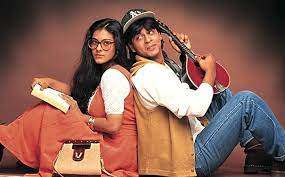

The Best Movies According to Rizu
- Hamari Adhuri Kahani
"Hamari Adhuri Kahani" is a poignant Bollywood film that explores the complexities of love and loss.
With stellar performances by Emraan Hashmi, Vidya Balan, and Rajkummar Rao, it delves into the depths
of emotions and the sacrifices one makes for love. The film's soulful music adds an extra layer of depth
to this heart-wrenching tale. A must-watch for those seeking a heartfelt romantic drama
- Dilwale Dulhania le Jayenge

"Dilwale Dulhania Le Jayenge," often referred to as DDLJ, is an iconic Bollywood film released in 1995.
Starring Shah Rukh Khan and Kajol in the lead roles, it is a timeless tale of love, tradition, and family
values. With its memorable dialogues, captivating music, and endearing characters, DDLJ has become an epitome
of romance and remains one of the longest-running films in Indian cinema. A classic that continues to steal
hearts even after decades.